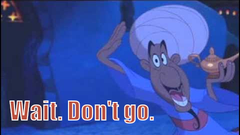

A note about taking notes (part 2)
Note taking and Document Organization

This is the second article of a series on taking notes. In the previous one, I listed my reasons for taking notes as well as a few rules of thumb for deciding when it is worth to take a note about a topic. In this article, I will focus on the most practical aspects of note taking and I will share how I do it. It shouldn't come as a shock that these aren't the Note Commandments, but my experience and way of doing things. I am quite happy with most of them, but there is always room for improvement and I will be glad to hear from you and how you tackle the scenarios that I have described here or any others that might be relevant.
Do you prefer to watch this content? You can find the video here:
How to take notes
This is one of those things where perfect is the enemy of good. There are many ways to take notes, and not all of them will suit your needs. If you haven't started yet, I'd recommend that you just start. Then you can iterate and find what is right for you. If you are already taking notes, an open mind can be helpful to try new things once in a while.
You can jump on the fetish for handwriting bandwagon: buy the most expensive pens or other fancy stationery; practice calligraphy at dawn or encode your notes as haikus. Be my guest, I won't judge. But I want to focus on the practical aspects of note taking. This is one of those multiple cases when I rather be pragmatic than fancy. And, although I occasionally take handwritten notes, most of my notes are digital. So, I am going to focus on taking notes digitally with some references to the handwritten ones when it makes sense, to provide more context.
I must address the elephant in the room first: Why did I choose digital instead of handwritten notes? Well, beyond considering myself as a 21st Century (Digital Boy) –"I don't know how to live, but I got a lot of toys," as Bad Religion used to sing–, it boils down to three reasons:
- I feel comfortable touch typing, at least as comfortable as with a pen, if not more. And I am surrounded by computers pretty much all the time. I live and swear by them. They are my hobby and the essential tool for my job.
- I can easily edit an evolve my notes. My eldest daughter takes beautiful notes, worth reading even when you are not a fan of the topic. Not my case. I still get comments from my mom about my poor handwriting. So modifying content or adding stuff on top of a not very nice page isn't very appealing in my case.
- Exploiting the notes that I have created is far more convenient. I often ask myself "where are my notes about X?", "what did I learn about Y?", "how did I decided to do task Z?" and other similar questions. Finding digital notes is trivial. A grep search can do wonders. A ripgrep search can do wonders faster. 😄
Now that this is out of the way, let's talk about some of the things I do.
Make it possible
When you have an idea or are working on something, it is important that you don't have to break your flow to be able to take notes. I work with computers most of the time, so my hands are on a keyboard, or very close to it, many hours per day. I have tried to make the process of note taking seamless and this is what I have come up with.
Simplify the process
Use a tool that is convenient for you. It can be an app meant for taking notes, like Obsidian, OneNote, or Keep, or just a plain text editor, like Emacs –my favorite,– VSCode, or vim1. Don't feel bad if you ignore anybody's advice –including mine– and focus on your use cases to choose your tool. Trying a few options for a couple of weeks each should be helpful here.
Hopefully the tools that you have chosen will be powerful enough to use templates and snippets. You want to use templates to maintain the structure of your notes, because that is very helpful for using them later, while avoiding to type all the boilerplate. The snippets are helpful for a similar reason, but focus on parts of your notes, like code blocks or inserted images. Having both available will make the note taking process more efficient and lower your resistance to take a new note.
In case you are interested, in Emacs I use Org Mode capture templates and tempel.
Design your workflows
At the very least you want to have a clear idea on how to conduct the most common tasks: add a note, search for a note, filter notes, navigate the references… All of these should be doable using your tools and, if possible, they should happen in the least disruptive way, making it easy to come back to what you were doing before. Try to do those things when your choosing a tool and get to know those workflows by heart.
I use a shortcut to create notes that takes me to a new tab in Emacs, which I have open all the time. I also use shortcuts for finding and reading notes. Those shortcuts use ripgrep from Emacs to find the relevant notes, using text or regular expressions, and show me a list with previews of the candidates.
Look ma, no… computer
Taking notes while I have a computer in front of me is sorted out, but what happens the rest of the time? I often take walks, both as part of my physical activities and as a way of thinking about stuff in a different context. I'd say that most of my best ideas happen during those walks and I don't want to loose them. Some people use phone apps to enter text and synchronize that content with their computers. I have a few of those too. But typing while walking isn't ideal and could be very dangerous for your health as a pedestrian. I prefer to record audio on those situations. Then, I can be sure that I won't loose those ideas and that I can play them later. You can use an external mic if you want to improve the quality of your audio and reduce the background noise, particularly if you want to transcribe the recordings. To be totally honest, frequently I delete those notes without ever listening to them, but that is because most often I capture those same ideas in my written notes right after my walks. Anyhow, they are still useful because they help me in the process of thinking and, from time to time, having the ability to retrieve the audio is invaluable.
I got this mic for my phone some years ago and have used Whishper a few of times for the transcription with mixed results. Recently, I have come back to using "Just Press Record" that can both use that external mic and produce the transcripts from my audio notes. Not only that, it can generate the transcripts for many languages and I can confirm that if works well with Spanish, my mother tongue, and even with my broken English.
The other scenario when computers and keyboards aren't enough is when the idea is better of with some kind of graphic representation –a block diagram, a map, a design…– that is harder to describe than to draw. My solution here is very similar to the previous one. I draw it. Anywhere. I have a tiny notebook that I tend to have with me, but if I don't, I draw it on a paper, the back of a flyer, a napkin, or on the sand if necessary. Then, I take a picture of the result with my phone and use it later. I can attach those pictures to any note or employ them as the starting point of a new image.
Standards are your friends
You will take different types of notes and it is unlikely that they all require to use the same structure. For example, the sections of a recipe (ingredients, preparation, serving information, …) are very different from the ones that you will use in a how-to (goals, steps, references, …). Also, it would be useful to have each recipe in a single file, in case you want to share them individually, while log entries are better in the same file, because they are interrelated and make more sense together.
You want to use the right structure for each bit of information and be consistent within the same type of data. The best way to achieve this is by having a simple document where you establish the rules for your note taking system. It doesn't have to be complex at all; avoid overengineering. A single page document should do. You will use it more often at the beginning and for the types of notes that you seldom take.
My standards include the way I name my files based on their content. I use the first three-four (capital) letters to describe the type of information it contains. "HOW" for a how-to, "CHS" for a cheat sheet, CLST for a checklist or LOG for a long term journal. There are exceptions, though. My meeting notes start with date in ISO 8601 format without the dashes.
Don't let the medium get in the way of taking notes
No matter how cool your tools are, it is important to remember that the goal is to take notes that are useful with minimal disruption to whatever you are doing.
Don't try to be extra fancy
If you ever had to write a long essay, you probably learned the hard way that focusing on format is not a great idea at the beginning. Just add the essential bits to define the structure of the text: the headers and maybe some emphasis where it is required to keep the meaning. Anything other than that will slow you down, make you loose track of your thoughts, and can be easily done later.
I use Org Mode, because my go-to editor is Emacs. You can think of Org Mode as Markdown on steroids. It was created before, there is a single canonical version, and it is well supported. So much so that Org Mode has been ported to other editors and environments. Even the page that you are reading now, has been written in Org Mode, and thanks to Hugo, converted flawlessly into this webpage.
But if you prefer Markdown, go with it. Or any similar format. You do you. Any of those markup languages supports basic formatting (headers, lists, emphasis). Some have additional nice to have features like code blocks, metadata blocks, or labels per section. I do recommend, though, using an open and text based format. That way you will avoid any platform lock-in and make your searches and additional processing platform independent.
Three step process
The next hint doesn't apply to every type of note, but it is useful when you want to capture many things that are, at least partially, organized in your head.
You don't want to get into the details too soon. It is better to capture the main ideas first and work on the details later. Start with an outline that contains all of the main ideas, or as many as you already have identified in your mind. Then move to explaining the concepts at a basic level. And finally work on the details, while you fix and improve what you have so far. This is a very effective process and reminds me of the way progressive images are rendered.

Be multimodal
Your written notes are valuable, however you know that a picture is worth a thousand words. At the current exchange rate, a diagram is around 780 words and a mindmap, 827. 😄 Don't loose all that value! Attach your graphical assets to your notes. If you use mindmaps often, or any other kind of diagrams, get yourself a nice application that suits your needs. I tend to use my iPad and its pen for basic drawing and an app for the mindmaps.
When you do this, I recommend you to keep two things in mind:
- Add a written reference/description of your attachment, because it will simplify searches. It is also nice to have some text that connects the image with the rest of the note.
- If you have generated that image with an application, insert a link to the editable document, not just the exported result, so you can improve that part of your note when needed.
Prioritize labels over folder hierarchy
Some people love organizing their notes into folders of a well designed hierarchy. I only have a couple of folders one for my project logs and another for the rest of my notes. I have tried in the past using hierarchies, but it didn't work for me. The limitation with this type of organization is exactly the same one that I have with my images or my email. Most often than not an item belongs to more than one class of data. If I have a picture of my three daughters enjoying dinner at the beach, where should I classify it? In one of the folders that contains the pictures of each of my daughters? If so, in which one? In the folder for the pictures of my summer vacations of that year? In a folder for family moments? How many searches should I do to find that data?
Labels are a more effective way to organize your data. You assign as many labels as you wish to each piece of data. And you just need a way of finding items that contain a given label. Searching by any of the labels will take you the desired items.
Org mode has a way to specify metadata and there is a place for keywords –i.e., labels,– that you can use for this purpose. You can also use Org mode tags for logs and apply them selectively to each entry. If you are using Markdown, some people use the YAML front matter that was first adopted by Jekyll.
Include your sources
When the knowledge that I am capturing in a note is based on some resource (internal or external), it is always a good idea to keep it as a reference. It will help you in case you want to extend the information, but also if you want to verify that the note is (still) correct.
Even when there is no actual source for what is captured in a note, it is helpful to make that explicit. "This is the result of my experimentation", "these are the conclusions of my reflections on this", etc. Outside of academia and with no peer review, it isn't a great idea to use your notes as the absolute truth without knowing that they had no further support.
Your tool should be helpful for adding links to your notes and for visiting those links too.
Summary
In this article I have shared the way I take notes independently of their content. I have tried to cover most of what I consider my best practices and explain them with enough detail so you can implement them yourself. But if I didn't, don't be afraid to ask. Please make your question in any of the social networks that you have in the home page and mention me.
In the next article, I will cover how to use the notes that you have taken, because that is what we want the for. The goal of this series is to not just take notes, but getting the most out of them and for that we will build our own AI tool from scratch using AI Optimizer and Toolkit. Are you game?
Stay curious, Hack your code, See you next time!
Footnotes
A penance for the Church of Emacs 😂